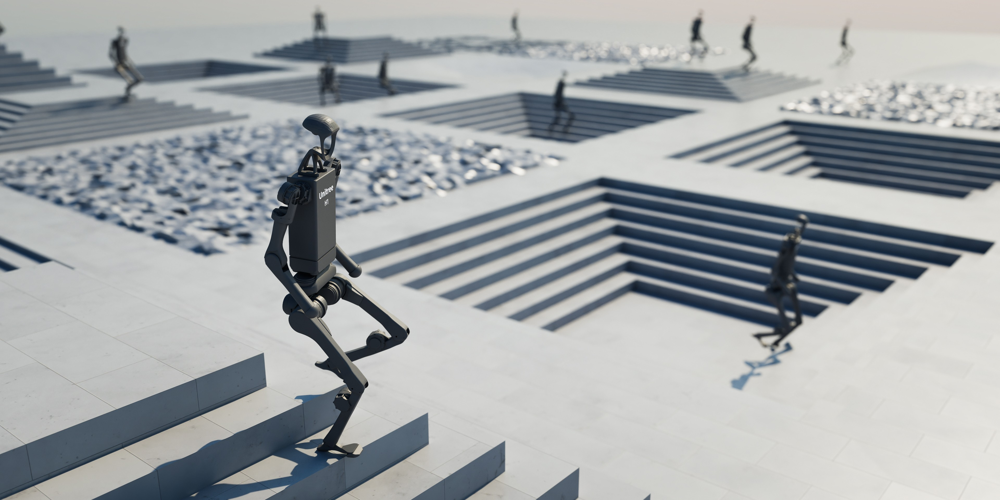
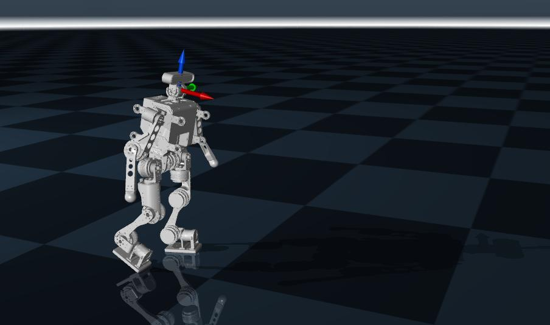

仿真、模型与数据¶
本部分介绍仿真器、机器人仿真模型以及机器人动作数据。
机器人仿真模型¶
现在的人形机器人或四足机器人大多都使用强化学习训练控制器，训练过程在仿真器中，并且验证控制器能力也是在仿真器中。常用的仿真器有IsaacSim、Mujoco，训练框架有IsaacLab、Mjlab等。


在不同的仿真器里用不同的模型文件来描述机器人，常用的是URDF（Unified Robot Description Format），在任何仿真器都适用。XML文件专用于Mujoco，USD专用于IsaacSim和IsaacLab。通常先有URDF，然后转换成另外两个。
URDF用来定义机器人的刚体结构、关节连接关系、几何外形、质量和惯量、碰撞模型、可视化模型、部分传动/插件扩展信息。想象一下一个人形机器人如果用抽象的树状图来描述的话，就像下面这张图一样，URDF就是将这个树状图用代码来表示。Link 表示机器人中的刚体部件，如躯干、头部、上臂、小腿和脚；Joint 表示刚体之间的连接和运动约束，如肩关节、肘关节、髋关节和膝关节。
flowchart TD
base["base_link<br/>躯干/骨盆"]
neck_joint(("neck_joint"))
head["head_link<br/>头部"]
l_shoulder_pitch(("l_shoulder_pitch"))
l_upper_arm["l_upper_arm_link<br/>左上臂"]
l_elbow_pitch(("l_elbow_pitch"))
l_forearm["l_forearm_link<br/>左前臂"]
l_wrist_joint(("l_wrist_joint"))
l_hand["l_hand_link<br/>左手"]
r_shoulder_pitch(("r_shoulder_pitch"))
r_upper_arm["r_upper_arm_link<br/>右上臂"]
r_elbow_pitch(("r_elbow_pitch"))
r_forearm["r_forearm_link<br/>右前臂"]
r_wrist_joint(("r_wrist_joint"))
r_hand["r_hand_link<br/>右手"]
l_hip_pitch(("l_hip_pitch"))
l_thigh["l_thigh_link<br/>左大腿"]
l_knee_pitch(("l_knee_pitch"))
l_calf["l_calf_link<br/>左小腿"]
l_ankle_pitch(("l_ankle_pitch"))
l_foot["l_foot_link<br/>左脚"]
r_hip_pitch(("r_hip_pitch"))
r_thigh["r_thigh_link<br/>右大腿"]
r_knee_pitch(("r_knee_pitch"))
r_calf["r_calf_link<br/>右小腿"]
r_ankle_pitch(("r_ankle_pitch"))
r_foot["r_foot_link<br/>右脚"]
base --> neck_joint --> head
base --> l_shoulder_pitch --> l_upper_arm
l_upper_arm --> l_elbow_pitch --> l_forearm
l_forearm --> l_wrist_joint --> l_hand
base --> r_shoulder_pitch --> r_upper_arm
r_upper_arm --> r_elbow_pitch --> r_forearm
r_forearm --> r_wrist_joint --> r_hand
base --> l_hip_pitch --> l_thigh
l_thigh --> l_knee_pitch --> l_calf
l_calf --> l_ankle_pitch --> l_foot
base --> r_hip_pitch --> r_thigh
r_thigh --> r_knee_pitch --> r_calf
r_calf --> r_ankle_pitch --> r_foot
classDef link fill:#dff4ff,stroke:#1f78b4,stroke-width:1.5px,color:#0b2239;
classDef joint fill:#fff3cd,stroke:#c99700,stroke-width:1.5px,color:#4a3b00;
class base,head,l_upper_arm,l_forearm,l_hand,r_upper_arm,r_forearm,r_hand,l_thigh,l_calf,l_foot,r_thigh,r_calf,r_foot link;
class neck_joint,l_shoulder_pitch,l_elbow_pitch,l_wrist_joint,r_shoulder_pitch,r_elbow_pitch,r_wrist_joint,l_hip_pitch,l_knee_pitch,l_ankle_pitch,r_hip_pitch,r_knee_pitch,r_ankle_pitch joint;一个 link 里通常包含三类信息：
- visual：外观显示
- collision：碰撞计算
- inertial：惯性参数
visual用于定义这个部件“看起来是什么样”。里面通常包括：
- 几何形状 geometry
- 相对位姿 origin
- 材质 material
collision用于定义碰撞检测时使用的几何体。它通常和 visual 分开，因为可视化模型可以很精细；碰撞模型通常希望更简单，便于提高计算效率
inertial用于定义物理仿真所需的惯性信息，包括：
- 质量 mass
- 质心位置 origin
- 惯性矩阵 inertia
例如：
<link name="upper_arm">
<visual>
<origin xyz="0 0 0.2" rpy="0 0 0"/>
<geometry>
<cylinder radius="0.04" length="0.4"/>
</geometry>
<material name="blue"/>
</visual>
<collision>
<origin xyz="0 0 0.2" rpy="0 0 0"/>
<geometry>
<cylinder radius="0.05" length="0.4"/>
</geometry>
</collision>
<inertial>
<origin xyz="0 0 0.2" rpy="0 0 0"/>
<mass value="2.0"/>
<inertia
ixx="0.01" ixy="0.0" ixz="0.0"
iyy="0.02" iyz="0.0"
izz="0.01"/>
</inertial>
</link>
joint 用于连接两个 link，描述它们之间的相对运动关系。一个 joint 通常要定义：
- 父 link：parent
- 子 link：child
- 关节类型：type
- 安装位姿：origin
- 运动轴：axis
- 限位：limit
例如这里表示upper_arm 通过一个旋转关节连接到 torso关节安装在躯干某个位置绕 y 轴旋转转动范围是 −1.57 到 1.57 弧度
<joint name="shoulder_pitch" type="revolute">
<parent link="torso"/>
<child link="upper_arm"/>
<origin xyz="0.2 0 0.5" rpy="0 0 0"/>
<axis xyz="0 1 0"/>
<limit lower="-1.57" upper="1.57" effort="50" velocity="2.0"/>
</joint>
URDF 中常见关节类型包括：
- fixed固定关节，没有相对运动，适合连接固定结构件
- revolute旋转关节，有角度上下限，适合机器人关节
- continuous连续旋转关节，没有角度上下限，适合轮子
- prismatic平移关节，沿某一轴线平移，适合直线驱动器
URDF有很多开源的，可以随便找一个去参考。XML和USD是类似的文件，只不过描述方式不一样。
我们到目前为止只有机械模型，还没有仿真模型。本章后续内容会讲解从机械模型导出URDF、XML、USD的详细步骤。
机器人动作数据¶
现在人形机器人越来越多地使用参考数据进行训练，这些参考数据大多都来自于人体动捕数据，比如BVH（Biovision Hierarchy）人体数据。BVH文件可以通过viewer查看：BVH viewer。还有其他描述方式，比如SMPLX模型格式数据。也由于人用csv直接存储，但是原理都是一样的，他们都是定义了机器人怎么动，存储的内容是每一帧关节角度、根节点位姿、时间戳、身体速度/加速度等。

有了动作数据，因为人体结构和机器人结构并不相同，需要重定向（Retarget）到人形机器人的结构上，这个时候就需要用BVH文件和机器人URDF模型，建立一个关节、连杆映射关系，通过解优化问题来解算出来映射到机器人结构上的关节角度值等。重定向有很多人讲过，很多人都使用GMR。